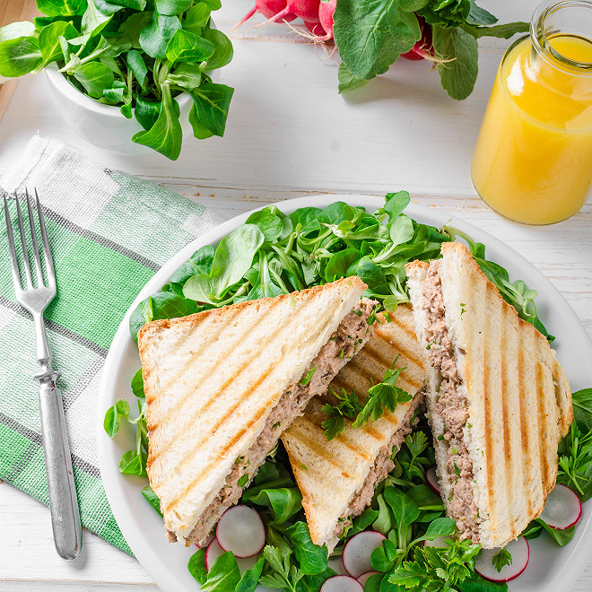

Croque-monsieur au thon

Rapide et yummy !
Ingrédients
- 16 tranches de pain de mie
- 1 bonne cuillère à soupe de moutarde de Dijon
- poivre
- sel
- beurre
- 2 boite de thon au naturel
- 8 tranches de toastinette
Préparation
- Beurrer chaque tranche de pain de mie.
- Dans une jatte, bien mélanger le thon, la moutarde, le sel et le poivre ensemble.
- Déposer un peu de la préparation sur 8 tranches, suivi d'une tranche de fromage ou de gruyère râpé.
- Terminer en recouvrant avec les 8 autres tranches de pain de mie.
- Passer au four à 200°C environ 4 mn. Retourner alors les croques et les laisser encore 4 mn.
- Servir avec une bonne salade verte ou de la mâche.
Page d'accueuil